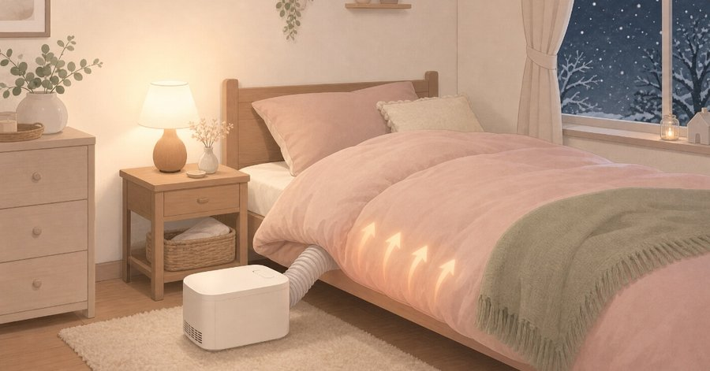

TOP LIVE
03 ／ LIVE
暮らしを、整える。
働く毎日は、暮らしの側から整えるとうまく回ります。スキンケアや一人暮らしのアイテムを、買う前に確かめる場所です。記事はゆづきのブログ「買う前チェック帳」にあります。
LIVE寝る前の10分を、整える。


買う前に確かめる
一人暮らし


CHOOSE/USE/LIVE/WORK STYLE IN THE AGE OF AI/CHOOSE/USE/LIVE/WORK STYLE IN THE AGE OF AI/CHOOSE/USE/LIVE/WORK STYLE IN THE AGE OF AI/
ARTICLES
ゆづきの記事
買う前に確かめたいことを、チェックリストにまとめています。記事は「買う前チェック帳」で読めます（広告を含みます）。

布団乾燥機
カラリエ、布団全体は温まる？
アイリスオーヤマの布団乾燥機カラリエ。星1〜3の口コミから、買う前に知りたいデメリット5つと向いている人を整理。
READ ON BLOG
ドライヤー
高いドライヤーは何が違う？
1万円以下と3〜5万円のドライヤーの違いを、4つの観点で整理。
READ ON BLOGリングライト
オンライン会議の顔が暗い？
在宅のオンライン会議で顔が暗く映るときに。リングライトを買う前に見ておきたい4つと、置き場所のコツ。
READ ON BLOG卓上加湿器
在宅の日、夕方に肌が乾く？
デスクに置く小さな加湿器を買う前に見たい5つ。方式・加湿量・タンク・手入れ・置き場所をチェックリストで。
READ ON BLOGWHY HERE
「整える」が、この3つ目にある理由
仕事を選ぶのも、仕事でAIを使うのも、体力と気持ちに余裕がないと続きません。寝る前の10分、朝の支度、部屋の片づけ。そのあたりが整っていると、転職の面接も、新しいツールを覚えるのも、少し楽になります。だから3つ目に「整える」を置いています。
商品の紹介はすべて「買う前チェック帳」側で行い、このサイトでは物を売りません。